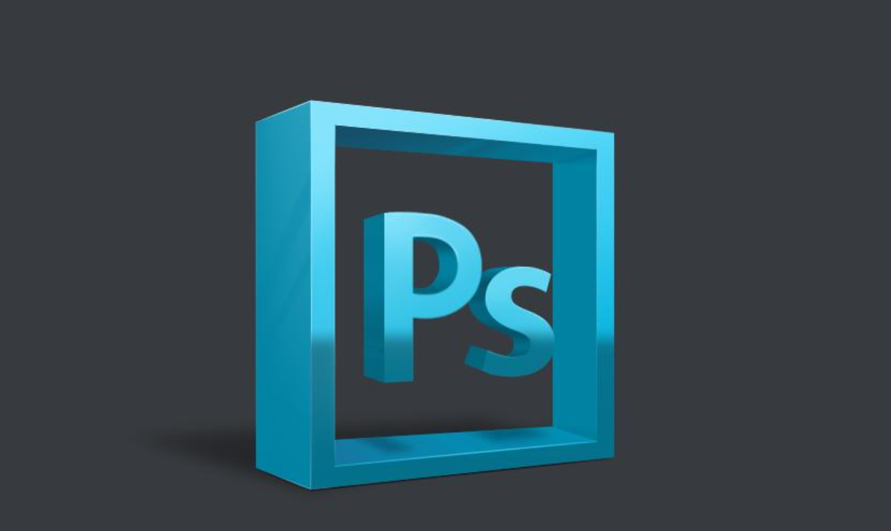

PS基本介绍
PS的发展历史
1987年，Photoshop的主要设计师托马斯·诺尔买了一台苹果计算机（MacPlus）用来帮助他的博士论文。与此同时，Thomas发现当时的苹果计算机无法显示带灰度的黑白图像，因此他自己写了一个程序Display；而他兄弟约翰·诺尔这时在导演乔治·卢卡斯的电影特殊效果制作公司Industry Light Magic工作，对Thomas的程序很感兴趣。两兄弟在此后的一年多把Display不断修改为功能更为强大的图像编辑程序，经过多次改名后，在一个展会上接受了一个参展观众的建议，把程序改名为Photoshop。此时的Display/Photoshop已经有Level、色彩平衡、饱和度等调整。此外John写了一些程序，后来成为插件（Plug-in）的基础。 他们第一个商业成功是把Photoshop交给一个扫描仪公司搭配卖，名字叫做Barneyscan XP，版本是0.87。与此同时John继续找其他买家，包括Super Mac和Aldus都没有成功。最终他们找到了Adobe的艺术总监Russell Brown。Russell Brown此时已经在研究是否考虑另外一家公司Letraset的ColorStudio图像编辑程序。看过Photoshop以后他认为Knoll兄弟的程序更有前途。在1988年7月他们口头决定合作，而真正的法律合同到次年4月才完成。 在二十世纪90年代初美国的印刷工业发生了比较大的变化，印前（pre-press）电脑化开始普及。Photoshop在版本2.0增加的CMYK功能使得印刷厂开始把分色任务交给用户，一个新的行业桌上印刷（Desktop Publishing－DTP)由此产生。 [1] 至2015年2月19日，是Adobe Photoshop发布25周年纪念。 2018年7月17日报道，Adobe计划在2019年推出iPad全功能版本Photoshop
PS的产品功能
Photoshop的专长在于图像处理，而不是图形创作。图像处理是对已有的位图图像进行编辑加工处理以及运用一些特殊效果，其重点在于对图像的处理加工；图形创作软件是按照自己的构思创意，使用矢量图形等来设计图形。平面设计是Photoshop应用最为广泛的领域，无论是图书封面，还是招帖、海报，这些平面印刷品通常都需要Photoshop软件对图像进行处理。 广告摄影作为一种对视觉要求非常严格的工作，其最终成品往往要经过Photoshop的修改才能得到满意的效果。影像创意是Photoshop的特长，通过Photoshop的处理 可以将不同的对象组合在一起，使图像发生变化。网络的普及是促使更多人需要掌握Photoshop，因为在制作网页时Photoshop是必不可少的网页图像处理软件。在制作建筑效果图包括许三维场景时，人物与配景包括场景的颜色常常需要在Photoshop中增加并调整。视觉创意与设计是设计艺术的一个分支，此类设计通常没有非常明显的商业目的，但由于他为广大设计爱好者提供了广阔的设计空间，因此越来越多的设计爱好者开始学习Photoshop，并进行具有个人特色与风格的视觉创意。界面设计是一个新兴的领域，受到越来越多的软件企业及开发者的重视。在当前还没有用于做界面设计的专业软件，因此绝大多数设计者使用的都是该软件。